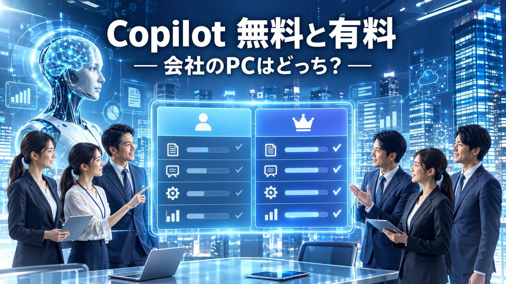

Copilotの無料と有料の違い｜会社のPCのCopilotはどっち？

会社のPCに、Copilot（コパイロット）のアイコンが出てきましたよね？
結論から言うと、Copilotの無料と有料の違いは「Word・Excel・Outlookの中で、あなたの社内のメールや資料を材料に動くかどうか」です。会社のアカウントでサインインして使うCopilot Chat（コパイロット チャット）は、対象のMicrosoft 365を契約している会社なら追加費用なしで使える「無料の範囲」で、社内データを使って動くMicrosoft 365 Copilotは、会社が1人ずつ追加で払う「有料の範囲」です。
あなたの画面がどちらなのかは、この記事の見分け方で1分ほどで確かめられます。
確認日：2026年10月21日（料金・上限は各社の公式情報で確認。変わることがあります）
Copilotは3種類ある、と考えると迷いにくいです
「Copilot」という名前は、いくつかのサービスにまとめて付いています。最初はここでつまずきやすいので、3つに分けて考えると整理しやすくなります。
- 個人向けの無料Copilot：個人のMicrosoftアカウント（プライベートのメールアドレスなど）で使うAIのチャット。ブラウザーやスマホのアプリで使えます。
- 仕事用のCopilot Chat：会社のアカウント（会社が管理する「職場または学校のアカウント」）でサインインして使うチャット。対象のMicrosoft 365を契約している会社の社員は、追加費用なしで使えると公式に案内されています。
- 有料のMicrosoft 365 Copilot：会社が1人ずつライセンス（使う権利）を追加で買うと、Word・Excel・PowerPoint・Outlook・Teamsの中でCopilotが動き、社内のメールや資料、会議の内容を材料に答えてくれます。
なお、Microsoftの技術資料（Microsoft Learn）には、「Microsoft 365 Copilot」が「Microsoft Copilot」に、「Microsoft 365 Copilot Chat」が「Microsoft Copilot Chat」に名前が変わったと書かれています。移り変わりの時期なので、画面や資料で古い名前と新しい名前が混ざって見えることがあります。この記事では、料金ページの表記に合わせて「Microsoft 365 Copilot」と書きます。
無料と有料の違いを表で見る
会社で使う場面に絞って、無料の範囲（Copilot Chat）と有料の範囲（Microsoft 365 Copilot）を並べます。
| 項目 | 無料（仕事用のCopilot Chat） | 有料（Microsoft 365 Copilot） |
|---|---|---|
| 費用 | 対象のMicrosoft 365を契約していれば追加費用なし | 1人あたり追加の料金（下の料金の節を参照） |
| 何を材料に答えるか | Webの情報と、あなたがアップロードしたファイル | Webの情報に加えて、社内のメール・チャット・資料・会議（Microsoft Graph＝社内データのつながり） |
| Word・Excel・PowerPointの中 | チャット経由で使える範囲がある | アプリの中でCopilotが直接動く |
| Teamsの会議の要約 | 公式の比較表で確認を | 会議の要約や実施項目の抜き出しに対応 |
| エージェント（作業を代わりに進める仕組み） | 会社が作ったものは従量課金で使える | リサーチ ツールなど、Microsoftが用意したエージェントが使える |
| データの保護 | エンタープライズ データ保護（EDP）の対象 | エンタープライズ データ保護（EDP）の対象 |
いちばん大きな差は「社内データを材料にできるかどうか」です。たとえば「先週の品質会議で決まったことと、関係するメールをまとめて」という頼みごとは、社内データにつながっている有料の範囲だから答えられます。無料の範囲では、あなたが議事録のファイルを渡せば、そのファイルの中身について答えてくれます。
あなたの会社のPCのCopilotはどっち？見分け方
次の順に確かめると、あなたの画面がどちらなのか分かります。
- サインインしているアカウントを見る：Copilotの画面の右上などに、会社のメールアドレスが出ていれば仕事用です。個人のアドレスなら個人向けです。
- WordやExcelの中を見る：文書の右下やリボンにCopilotのボタンがあり、開くと「社内のファイルやメールを参照して」頼める状態なら、有料のライセンスが割り当てられている可能性が高いです。
- 社内の窓口に聞く：いちばん確実なのは、情報システムの担当に「自分にMicrosoft 365 Copilotのライセンスは割り当てられていますか」と聞くことです。
ボタンが見当たらないときの確かめ方は、Copilot in Excelの使い方｜表示されないときの確認にまとめています。
料金の目安（法人と個人）
有料の範囲は、会社で買うか、個人で買うかで料金が変わります。2026年10月21日に公式ページで確かめた金額です（法人向けは税抜き）。
| 買い方 | プラン | 公式ページの表示 |
|---|---|---|
| 法人（300人まで） | Microsoft 365 Copilot Business（今のBusinessプランに追加） | 通常 ¥3,148／ユーザー／月相当（年払い）。2026年12月31日までの割引で ¥2,698（初年度のみ） |
| 法人（大企業向け） | Microsoft 365 Copilot | ¥4,497／ユーザー／月相当（年払い）、毎月払いは ¥4,722（年間契約） |
| 個人 | Microsoft 365 Personal | ¥2,130／月、¥21,300／年 |
| 個人 | Microsoft 365 Premium | ¥3,200／月、¥32,000／年 |
法人の料金は、会社が決めることなので、あなたが払うものではありません。個人向けのプランは、あなたが自分のために払えるものですが、月1,000円には収まりません。詳しくはCopilotの個人向け料金｜Microsoft 365 Personal・Familyとの関係とCopilotの法人向け料金｜Microsoft 365 Copilotを会社で入れるときで整理しています。
無料の範囲で楽になることと、選び方
無料の範囲で、仕事の何が楽になるか
有料のライセンスがなくても、仕事用のCopilot Chatで残業を減らせる場面はたくさんあります。たとえば次のような使い方です。
- 長い仕様書のPDFを渡して「品質に関係する条件だけを箇条書きに」と頼む
- 取引先への納期回答メールの下書きを、丁寧な言い方で3案出してもらう
- 工程表の説明文を、新しく入った人向けにやさしく書き直してもらう
- 引き継ぎメモの抜けを「この内容で、後任が困りそうな点は？」と点検してもらう
毎日の小さな下書きが10分ずつ早くなれば、1日の終わりに30分の余裕が生まれます。その時間を、家族と夕食を囲む時間や、自分のための学びに回せたらうれしいですよね。
使う前に、会社の決まり（利用規程）を先に確かめておくと安心です。社外秘の図面や、お客さまの個人情報は入れない、という線引きを最初に決めておきます。
あなたの使い方ならどちら？
最後に、選び方の目安です。
| あなたの状況 | 向いている選び方 |
|---|---|
| メールや資料の下書き、要約が中心 | まず無料のCopilot Chatで十分なことが多いです |
| 会議が多く、議事録づくりに時間がかかる | 会社にMicrosoft 365 Copilotの導入を相談する価値があります |
| 社内のメールや資料を横断して探す時間が長い | 社内データにつながる有料の範囲が向いています |
| 自宅で、個人のファイルにもAIを使いたい | 個人向けの無料Copilotから試し、足りなければ個人向けプランを検討 |
有料にするかどうかを急いで決める必要はありません。まず無料の範囲で1週間使ってみて、「ここは社内データにつながっていたら助かる」という場面を書き留めておくと、会社に相談するときの材料になります。
確かめた公式の情報
- Microsoft Copilot プランと価格（ビジネス向け）
- エンタープライズの生産性向上に AI を活用（大企業向けの料金）
- Microsoft Copilot および Microsoft Copilot Chat におけるエンタープライズ データ保護
- 個人向け Microsoft Copilot プラン
まとめ
Copilotの無料と有料の違いは、「社内のメールや資料を材料に、Word・Excel・Teamsの中で動くかどうか」です。会社のアカウントで使うCopilot Chatは追加費用なしの範囲で、社内データにつながるMicrosoft 365 Copilotは会社が追加で払う範囲です。
小さな次の一歩として、今日、Copilotの画面の右上にどのアカウントが表示されているかを見てみませんか。あなたの会社のPCのCopilotは、どちらでしたか？
まずは無料版で、今日の用事を1つだけAIに頼んでみませんか。足りないと感じた所が、有料にするかを決める一番の材料になります。
あなたが最初に任せたい仕事は何ですか？
最後まで読んでくださり、ありがとうございました。